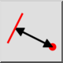
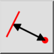
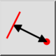
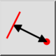

Distância Entidade a Ponto
Barra de Ferramenta / Ícone:
 

Menu: Info > Distância Entidade a Ponto
Atalho: I, E
Comandos: infodistep | ie
Esta é uma tradução automática.
Barra de Ferramenta / Ícone:
 

Menu: Info > Distância Entidade a Ponto
Atalho: I, E
Comandos: infodistep | ie
Esta ferramenta mede a distância exata entre uma entidade e um ponto dado pelo usuário.